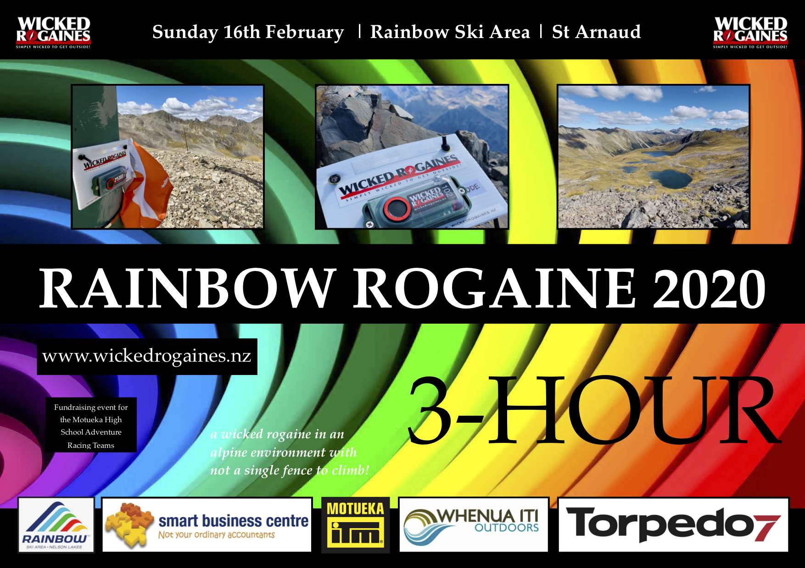

| Events in 2020 | |
| | |
| Saturday January 4th Duration: 4hr, 2hr & family events Location: Northburn, Cromwell, Central Otago |
Wicked Northburn Rogaine What better way to welcome in the new year and work off those festive celebrations. If you are down that way you have to go. If you are not there look at replanning your holidays. For a wicked time check out Wicked Rogaines for more details or on facebook. This is an excellent way to introduce family and friends to the sport. |
| Wednesdays 15th, 22nd & 29th January Duration: 1hr & 2hr Location: Mt Pleasant, Horotane Valley and Huntsbury |
Summer Evening Rogaine Series The Canterbury Summer Rogaine Series will return in 2020! This will be another epic series of summer rogaines and a great way to burn off all that Christmas pudding! More information will be added to https://www.canterburyrogaine.com/ in the new year. |
| Thursday 6th February Duration: 1hr & 2hr Location: Southshore |
Waitangi Rogaine Get ready for another awesome Waitangi multisport rogaine with foot, kayaking, packrafting options. More information will be added to https://www.canterburyrogaine.com/ in the new year. |
| Sunday February 16th Duration: 3hr Location: Rainbow Ski Area, Nelson Lakes National Park |
Rainbow Rogaine 2020  Set in the alpine basins that surround Rainbow Ski Area, we have planned a 3-hour course that will encapsulate what is unique and special in the area. Having the ability to drive to 1550-metres above sea level and begin the event there is exceptionally unique for a rogaine of this length. Check out Wicked Rogaines for more details or on facebook. |
| Saturday February 29th Duration: 90 minutes Location: Massey Child Care Centre |
Urban Rogaine Rogaine is a team event where teams of 2-3 are challenged to navigate, strategize around a set course, collecting as many clues from checkpoints within 1½ hour period. This event caters for a range of competitors from families to athletes. If you can read a map or have fun trying and think these questions from past checkpoints are easy, then come and join us. Spot prizes up for grabs! Download this flyer. |
| Sunday March 1st Duration: 4hr & 2hr Location: Orton Bradley Park |
Orton Bradley Rogaine Orton Bradley park offers a great variety of terrain and this is sure to be an fun rogaine - don't miss out! There will also be an exciting multisport add-on option for those that enjoy some kayaking/packrafting with their rogaining. More information will be added to www.canterburyrogaine.com in the new year. |
| Sunday March 15th Duration: 6hr, 3hr & family events Location: Christchurch environs |
Wicked Autumn Rogaine Find out what all these events are about. This is and ideal opportunity. For a wicked time check out Wicked Rogaines for more details or on facebook. |
| Wednesdays Mar 18th & 25th, April 1st Duration: 60 minutes Location: Rotorua |
Summer Series OBOP Summer Series - Rotorua - 60 minute rogaine. Do as individual or as team. Go as easy or hard as you like, collecting as many controls as you can in the time allowed. Simply turn up on day to enter. Check out www.obop.org.nz for more details. |
| Wednesdays Mar 18th & 25th Duration: 2hrs Location: New Plymouth |
Summer Rogaine Series Compete in teams of 2-5 people. Navigate to landmarks (eg signs, buildings, sculpture) which are used as 'controls' Record the answer to the question about the 'control'. Points are allocated to each 'control'. Teams collect as many points as possible in 2 hours. See orienteeringtaranaki |
|
New Zealand Covid-19
As of March 25th New Zealand went into Lockdown. The following events were regretfully not held. | |
| Wednesdays Mar 25th, Apr 1st & 8th Duration: 2hrs with family options Location: Christchurch Port Hills |
Wicked Autumn Series These events are always well patronated. What better way to break up the working week. Put these on your calendar. For a wicked time check out Wicked Rogaines for more details or on facebook. |
| Saturday April 4th Duration: 3hr & 2hr options Location: Kaihoka, Golden Bay |
Being held on the rugged but beautiful west coast of Golden Bay. Your chance to visit normally off-limits farms at Kaihoka. Stunning scenery of limestone bluffs and karst landforms, beaches, huge sand dunes, rolling farmland, blue lakes and patches of bush. More details at www.goldenbayatc.org. Download this flyer. |
| Sunday April 5th Duration: TBA Location: Kinloch Taupo |
Kinloch Rogaine More details at taupoorienteering.nz. |
| Saturday April 11th Duration: 3hr & 6hr options Location: Kaiwarua Station Rd, Waihaorunga, Waimate, South Canterbury |
Waimate Main School Kaiwarua Station Family Fun Rogaine Navigate your way through wallaby country and enjoy the fantastic scenery of the Hunter Hills. This is great country for a rogaine and a new area that has not been explored before by rogainers. With the Friday being the start of Easter weekend, this is an ideal opportunity to make a long weekend of it! Download this flyer. More details at www.waimatemain.school.nz. Click here for registration |
| Sunday April 19th Duration: 90 minutes Location: Kaukapakapa |
Auckland Rogaine Series A 90 minute format with quality maps and coaching available before each event. A mixture of easy to challenging controls, suitable for beginners to experts, rogainers, orienteers, adventure racers, trail runners. And most of all, fun. For more details see Auckland Rogaine Series. |
| Monday April 27th Duration: 2 hours Location: Chatto Creek, Alexandra |
2020 South Island Secondary School Championships A public event will follow the start of the schools Check out South Island Schools' Rogaine for more details. |
| Saturday May 2nd Duration: 3, 6 & 12hr Location: Nevis Valley, Central Otago |
Highland Events Autumn Rogaine The course has some nice flat stuff, quite a bit of 'rolling' and a fair amount of mountain! (may be some snow on the tops - Terry is excited as hell!) Check out Highland Events for more details. |
| Sunday May 3rd Duration: 90 minutes Location: Riverhead Forest |
Auckland Rogaine Series A 90 minute format with quality maps and coaching available before each event. A mixture of easy to challenging controls, suitable for beginners to experts, rogainers, orienteers, adventure racers, trail runners. And most of all, fun. For more details see Auckland Rogaine Series. |
| May 9th & 10th 2020 Duration: 24 hrs Location: Northern Ranges - Goyder Council, South Australia |
Australasian Rogaining Championships The event map covers some beautiful Mallee country, with a complex drainage system and deep erosion gullies and spurs. In addition to the 24-hour championship, there will be an 8-hour event commencing and midday on Saturday 9th May. It is recommend that visitors plan addtional time to enjoy and visit some of the local attractions around this area, such as the historical township of Burra and the wine regions of Clare and Barossa Valleys. See ARC 2020 for more information. |
| May 9, May 23 Duration: TBA Location: Areas around Dunedin |
Dunedin Rogaine Series Check out www.dunedinorienteering.org for more details. |
| Sunday May 17th Duration: 90 minutes Location: Lake Kereta |
Auckland Rogaine Series A 90 minute format with quality maps and coaching available before each event. A mixture of easy to challenging controls, suitable for beginners to experts, rogainers, orienteers, adventure racers, trail runners. And most of all, fun. For more details see Auckland Rogaine Series. |
| Sunday May 17th Duration: TBA Location: TBA, Hutt Valey | Not the City Safari Yes, it is back (sort of).With a City Safari doubtful, we'll run something on this date that you'll enjoy. For the last couple of years its been a bike-optional 3hr rogaine on the Kapiti Coast. For more details see Orienteering NZ Rogaine Events. |
| Sundays Jun 14, Jul 12 Duration: 2 & 4 hours Location: Different locations in the Waikato |
Don't Get Lost Rugged Rogaine The Don't Get Lost Rugged Rogaine Series is a fun way to explore the beautiful Waikato countryside, experience an adventure sport, practice map reading and navigation, and improve your fitness. Run, jog, or walk - you set the pace. By yourself, in a team, or as a family. Fun adventure or a competitive challenge and race For more details see orienteeringwaikato.org.nz. |
| Wednesdays Jun 17, 24, Jul 12, 19, 26 & Aug 26 Duration: 2hrs with family options Location: Christchurch Port Hills |
Wicked Winter Night Series These events are always well patronated. What better way to break up the working week. Put these on your calendar. For a wicked time check out Wicked Rogaines for more details or on facebook. |
| Saturday July 4th Duration: 6 hours Location: Lake Clearwater, Hakatere Conservation Park |
Heights of Winter This is one of the highlights of the year and certainly brightens up a dark winter. PAPO will be hosting the event this year. Due to Covid-19 restrictions we are only running a 6 hour event, with limited pre-planning time. We are using the existing map from the 2016 Heights of Winter. No catering or prize-giving will be provided See how.papo.org.nz and papo.org.nz/events/view/3896/heights-of-winter-rogaine. |
| Saturday July 4th Duration: 60 minutes Location: Redwoods Forest, Rotorua |
Mid Winter O - Hunt for the Wilderpeople Come dressed as your favourite character from this classic kiwi film. It has all the elements of a great NZ film - Native bush, eluding the authorities, getting away from it all in the great outdoors and building a hut. See Mid Winter O 2020. |
| Saturday July 18th Duration: 6 & 3 hours Location: Snow Farm, Wanaka |
Snow-gaine Highland Events bring you New Zealand's coolest rogaine! Ski (skinny or otherwise) or snow-shoe. The course will include some Snow Farm trails plus lots of 'off piest' country. You will need to know how to read a map! If it's cloudy you'll need to know how to use a compass as well. (Instruction given prior to start). See highlandevents.co.nz/events. |
| Saturday July 25th Duration: 6 & 3 hours Location: Whakarewarewa Forest, Rotorua |
Great Forest Rogaine Orienteering Bay of Plenty is DELIGHTED to be able to go ahead and run the 2020 Great Forest Rogaine, and on its planned date! The Great Forest Rogaine is a 3 or 6 hour, foot or mountain bike team rogaine open to all ages and abilities. The event will take place through the Whakarewarewa Forest area. You won't know where exactly until you receive the map on the day. Whakarewarewa Forest has hundreds of the world's best mountain bike and walking tracks.You're guaranteed to go somewhere new, and it's all part of the ADVENTURE! Check the website at Great Forest Rogaine 2020. |
| Sunday August 2nd Duration: 6, 4 & 2hrs with family options Location: Somewhere in Canterbury |
Wicked Winter Rogaine What a great event to blow away the winter blues. For a wicked time check out Wicked Rogaines for more details or on facebook. |
| Wednesdays Jul 1, 22, 29, Aug 12 Duration: 90 mins Location: Nelson Area |
Winter Series See Nelson Orienteering Club for more details. |
| Sundays Jun 28, Jul 26, Aug 30 Duration: 1.5 & 3 hours Location: Different locations in the Auckland area |
The TrailNav (Rogaine) Series Teams/Solos will navigate to as many checkpoints as they can, collecting points for each checkpoint visited. To earn extra points teams can complete mystery activities which will require brains, brawn, teamwork, strategy or a combination of all! For more details see lacticturkey.co.nz. |
| Wednesday August 5th Duration: 90 minutes Location: Rabbit Island, Nelson |
Full Moon Rogaine - Rabbit Island See Nelson Orienteering Club for more details. |
| Sunday August 16 Duration: 6, 3 & 1.5 hours Location: Culverden Area, North Canterbury |
Amuri Basin Rogaine Yes, it will be back again. A new location and just as much fun. This year's location promises to be a fantastic course with incredible views. A fantastic family day out, there is something for all ages and abilities. The post-race hospitality of the Rotherham and Amuri schools will not disappoint. We look forward to seeing everyone out and about to support this fantastic school fundraiser. More details on facebook Amuri Basin Rogaine Enter now at www.rogaine.org.nz/entry/entry.php?eventId=25. |
| Saturday August 29 Duration: 12, 6 & 3 hours with 6hr MTB option Location: Long Gully Station just out of Tarras, Central Otago |
Highland Events Spring Rogaine Terry from Highland Events knows how to put on a rogaine and has access to arguably some of the best country for it. This event will not disappoint and you will be treated afterwards to food provided by the local community. Details coming at Highland Events |
| Wednesdays Aug 19st, 26th, Sep 2nd Duration: 2hrs with family options Location: Christchurch Port Hills |
Wicked Winter Night Series It is time to get out and have a good time blowing away those winter blues. These events are suitable for all levels and all ages. For a wicked time check out Wicked Rogaines for more details or on facebook. |
| Sunday September 13th Duration: TBA Location: St Arnaud, Nelson |
Wily Weka This popular event is back again. Check Nelson Orienteering Club for more details. |
| Sunday September 20th Duration: 60 or 90 mins Location: Taupo |
Town Rogaine 3 mile bay This is a 60 or 90 minute rogaine which can be done on foot as well as bike as individuals or as teams - in particular families. Check Taupo Orienteering Club for more details. |
| Fridays Sep 11, Oct 23 Duration: 2 hours Location: Auckland |
Schools Sustainability Challenge Each race is for teams of 4 students (years 5-8) who will compete in a 2 hour event, which includes a mix of running/walking, navigation and sustainability based activities. Teams will navigate to as many checkpoints as they can, collecting points for each checkpoint visited. To earn extra points teams can complete sustainability themed activities which will require some research and teamwork. Examples of activities could be to identify native bird calls, match a pest to the correct trap used or make something from flax. Check lacticturkey.co.nz and local Auckland City Council sites. |
| Sundays 27 Sep, 11 Oct Duration: 90 minutes Location: Whakarewarewa MTB tracks, Rotorua |
Rotorua MTB Rogaine Series Add a different adventure into your riding ... See Orienteering Bay of Plenty. |
| Saturday October 3rd Duration: TBA Location: Taranaki |
NZ Secondary Schools Champs Hope we will be good with Covid levels by then. More information coming. Check School Sport New Zealand and local Taranaki sites. |
| Wednesdays October 14th, 21st & 28th Duration: 2hrs with family options Location: Christchurch Port Hills |
Wicked Spring Series These events are always well patronated. What better way to break up the working week. Put these on your calendar. For a wicked time check out Wicked Rogaines for more details or on facebook. |
| Sunday November 1st Duration: TBA Location: Van Asch Farm, Christchurch |
Van Asch Farm Score Event Check out Wicked Rogaines for more details or on facebook. |
| November 7th & 8th Duration: 24 hours Location: Hamner, North Canterbury |
New Zealand Rogaine Championships The course will be a real mix of exotic and native forest, scrub and open areas with of course the odd hill here and there. For this event all junior (under 23) entries will be free of charge, so no excuses for not giving it a go. |
| Sunday November 8th Duration: TBA Location: Rotorua |
MTB Adventure Quest Fun team rogaine for all the family, from littlies onwards. Includes fun mystery activities. Dress up encouraged. Lots of cool spot prizes. This year's theme still to be announced! Check out Orienteering Bay of Plenty for more details. |
| Mid Week - Jun 23, Jul 7, Aug 11, Sep 10, Oct 14, Nov 12 Duration: TBA Location: Wellington, Hutt Valley area |
Monthly Afterwork Rogaine Series All at different locations in the Wellington, Hutt Valley area. Put these in you calendar and break up the week. More details at Orienteering Hutt Valley. |
| Sunday November 15th Duration: 60 or 90 mins Location: Tokoroa, Taupo |
Tokoroa Town Rogaine This is a 60 or 90 minute rogaine which can be done on foot as well as bike as individuals or as teams - in particular families. See Taupo Orienteering for more details. |
| Sunday November 15th Duration: 60 or 90 mins Location: Tokoroa, Taupo |
Wicked 6hr Rogaine Wicked Rogaines are not to be missed. Put this date in your calendar. Events for all ages and abilities. Bring the whole family. See Wicked Rogaines for more details. |
| Sunday December 6th Duration: 3hrs Location: Masterton |
Christmas Classic This will be the 34th anniversary of the Classic. After a Covid delay, the event is going back to it's roots - something retro or revolutionary - take your pick of old clip cards or use smart devices with the maprunner app. Requires pre-entry. Details can be found at www.winterclassic.co.nz. |
| Wednesdays 7, 14, 21, 28 Oct, 4, 11, 18, 25 Nov, 2, 9 Dec Duration: 45 minutes Location: various locations around Hamilton |
Waikato Urban Rogaine Using GPS rtechnology, download the app and visit as many locations as you can int the alloted time. Check Orienteering Waikato for event locations and details. |
| Saturday December 12th Duration: 6 & 3hrs Location: Hutt Valley |
The Big Trig Yes it is on. "Big" means that it is bigger that the usual after-work rogaine and "Trig" means that there are some hills! And it is guaranteed to be fun. See The Big Trig Rogaine for more details and entry. |
| Sunday December 13th Duration: 6, 4hrs & 2hrs with family options Location: Christchurch Port Hills |
Wicked Xmas Rogaine Ho Ho Ho. Join the festivities. These fun rogaines are suitable for gurus to newbies. Anybody that has a moderate level of fitness can participate. A high level of navigation ability is not required. For a wicked time check out Wicked Rogaines for more details or on facebook. |
| Wednesday December 16th Duration: 2.5hrs or 90 min Location: Heathcote Cricket Club |
Christmas Twilight Rogaine You will have the added challenge (and bonus!) of riding the Gondola unlimited times... Adding to your strategy, and giving you a pleasant break while you suss out the next checkpoints you might visit with your rogaine buddies. Only, probably pays to keep an eye out the window! Go to canterburyrogaine.com for more details. |
| | |